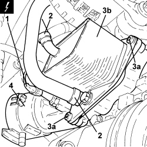

1084C10 ENGINE OIL HEAT EXCHANGER - R + R
- Path
- Procedures > 10 ENGINE > 1084 ENGINE LUBRICATION > 1084C ENGINE OIL COOLING CIRCUIT > 1084C10 ENGINE OIL HEAT EXCHANGER - R + R
- Kind
- repair procedure (removal / refitting; the operation number is the code)
- Applies to
- engines: 1.8, 1.9 JTD 8v, 1.9 JTD 16v; all production periods
- Interactive page
- https://sloeber94.github.io/elrnDB-fCrm/en/#/194000393
Applies to: engines: 1.9 JTD 8v, 1.9 JTD 16v; all production periods
 Removing
Removing
 Refitting
Refitting- Position the vehicle on a lift.
- Make sure that the ignition key is in the OFF position, then disconnect the battery terminal (-).
Description | Connector | |
|---|---|---|
- | Battery |
Op. 7055B54 UNDER ENGINE PROTECTION/GUARD - R.R.
Op. 1084B30 ENGINE OIL FILTER - R.R
1. Disconnect the electrical connection from the engine oil level sensor.
Description | Connector | |
|---|---|---|
1 | Engine oil level sensor |
2. Loosen the bands and disconnect the engine coolant inlet and outlet pipes from the engine oil heat exchanger.
3. Undo the bolts (3a) and remove the engine oil heat exchanger (3b).
4. Remove the heat exchanger and engine oil filter mounting, complete with gaskets.

Applies to: engines: 1.9 JTD 8v, 1.9 JTD 16v; all production periods
Refitting
Removing- Place the heat exchanger and engine oil filter mounting in position complete with gaskets.
- Place the engine oil heat exchanger in its housing and secure it tightening the bolts to the recommended torque.
Component | Fastening | dia | Value (daNm) | Validity |
|---|---|---|---|---|
Engine oil heat exchanger | Bolt | M10 | (support side) 4.5 - 5.5 | 1.9 JTD 16v 1.9 JTD 8v |
- Connect the engine coolant inlet and outlet pipes to the engine oil heat exchanger and tighten the bands.
- Connect the electrical connection to the engine oil level sensor.
Op. 1084B30 ENGINE OIL FILTER - R.R
Op. 7055B54 UNDER ENGINE PROTECTION/GUARD - R.R.
Op. 0010T11 ENGINE OIL - CHECK LEVEL AND TOP UP, IF NECESSARY
Op. 0010T20 ENGINE COOLANT - CHANGE
- Connect the negative battery terminal.
- Remove the vehicle from the lift.
Applies to: engines: 1.8; all production periods
- Refer to
Op. 1084B36 ENGINE OIL FILTER MOUNTING AND HEAT EXCHANGER - R.R
Topics linked from this page (7)
- 0010T11 ENGINE OIL - CHECK LEVEL AND TOP UP, IF NECESSARY
- 0010T20 ENGINE COOLANT - CHANGE
- 1084B30 ENGINE OIL FILTER - R.R
- 1084B36 ENGINE OIL FILTER MOUNTING AND HEAT EXCHANGER - R.R
- 7055B54 UNDER ENGINE PROTECTION/GUARD - R.R.
- A001 BATTERY
- K032 ENGINE OIL LEVEL SENSOR